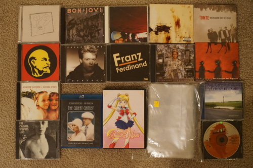
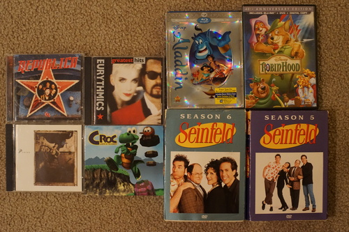
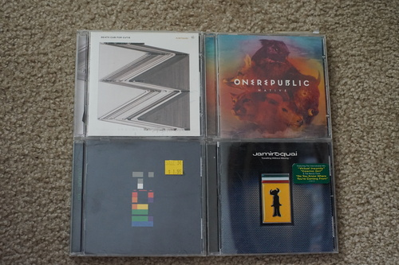

I was walking downtown and I saw a girl reading my favorite book on a bench!! I would've made a new best friend! Is it weird to run up to people reading a book??? I hope she enjoys it ❤️ I really love Klara!!

Ryan took me to see the bears again. I got a good look at their butts. Now, one would expect by the cuteness of teddy bears, that bears would have cute butts. This is wrong. Bears do NOT have cute butts. They are not bunnies. They are not deer. My day is ruined.

Thank you to everyone who has talked to me about kpop boys. They still confuse me. I don't understand them at all.
Some German family must have done some cleaning because the thrift store was filled with European (mostly German) media. Tons of CDs, movies, and kid's books. I wish I had more time to go through it! I grabbed a few CDs I thought looked interesting. All CDs $.99
Finally got to delete my files that skip!! I'll probably toss the discs too. They are scratched to hell.
SCORE. I really wanted the album with Closer!
I didn't intend to buy so many Smashing Pumpkins albums but $4 was the only thing stopping me.
Ryan's haul! There was a very tense hostage exchange after I found Republica and he found Great Gatsby.
Round 2 at Goodwill. All CDs $.99 at this store too.
Not Waking Up?! How will I recreate my Sims 2 playlist?? I can still hear HYDE's Season's Call in my head after "it's too late to order fries".